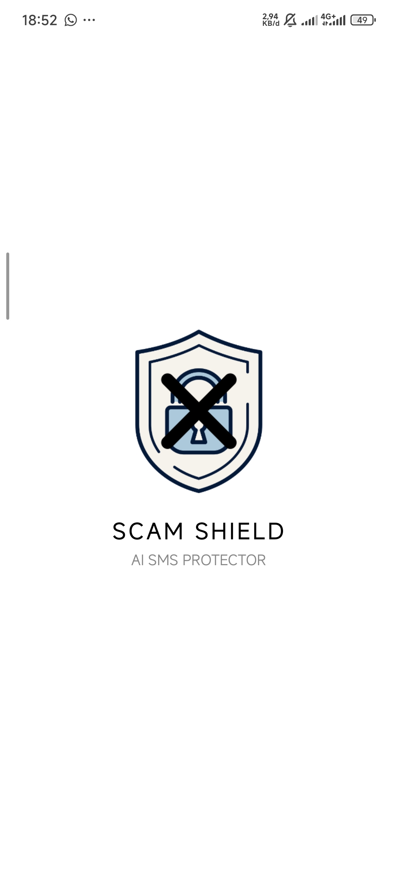
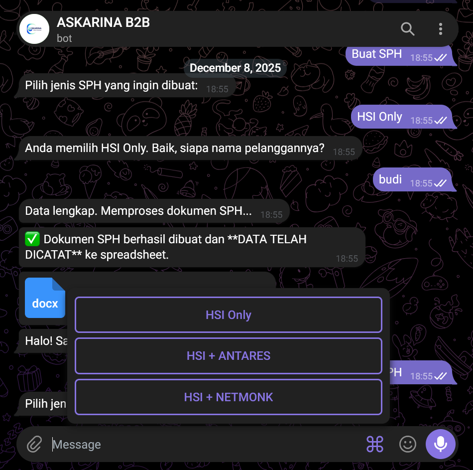
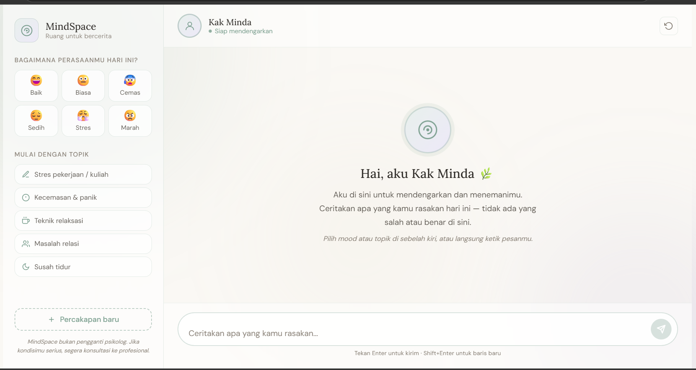

Fresh graduate D3 Teknik Telekomunikasi dari PENS yang bertransisi ke dunia software development. Terbiasa membangun solusi berbasis data, dari aplikasi Android hingga model Machine Learning, dan siap berkontribusi di tim IT.
Membangun web & aplikasi modern
Eksplorasi teknologi baru
Belajar dari nol dengan tekun
Selalu ingin berkembang
Halo, saya Amatul Kafi. Saya lulusan D3 Teknik Telekomunikasi yang sedang bertransisi ke dunia software development.
Saya suka membangun solusi berbasis data — mulai dari aplikasi Android, model machine learning, hingga sekarang mengasah skill web development dari nol.
Semangat saya ada di belajar hal baru, menulis kode yang rapi, dan menyelesaikan proyek nyata dari awal sampai akhir.
Politeknik Elektronika Negeri Surabaya, Surabaya, Jawa Timur
PT Telkom Indonesia (Persero) Tbk
Kemampuan yang saya kuasai
Kotlin
Python
Android Development
Git & Github
Beberapa hal yang sudah saya bangun

Aplikasi Android berbasis Machine Learning untuk mendeteksi SMS berbahaya secara otomatis dan berjalan sepenuhnya offline. Mengimplementasikan Multinomial Naïve Bayes dengan Laplace Smoothing (α = 1.0) dan ekstraksi fitur custom TF-IDF (Unigram & Bigram), mencapai akurasi 92,55%.

Asisten Kerja Sales Telkom daerah Kenjeran — sistem asisten digital berbasis Telegram Bot untuk membantu sales melakukan input laporan, mencari data pelanggan, dan membuat Surat Penawaran Harga (SPH) secara cepat dan terintegrasi.

Chatbot web kesehatan mental berbasis AI, dikembangkan dalam program Maju Bareng AI (Hacktiv8 x Google.org x Asian Development Bank) menggunakan Gemini API.
Yuk terhubung dan diskusi bareng